第3章 描画の練習
第2節 絵を描くための基本操作 1
本項では、絵を描くための基本となるツールを紹介します。
第1項 ブラシツールの使用
この項で学習する内容
- [ブラシツール]を使った描画方法を習得する。
ブラシツールで描画する
Photoshopは写真の加工を主に行うソフトと思われがちですが、
[ブラシツール]を使って、実際に絵筆で描いたような描画を再現することができ、
また、ペンタブレットと呼ばれるペン型のデバイスを使うことで筆圧まで再現できるため、
絵画やイラスト、漫画などを描く際にも用いられることがあります。
ここでは、ブラシツールを使用して「三色団子」を描いてみましょう。
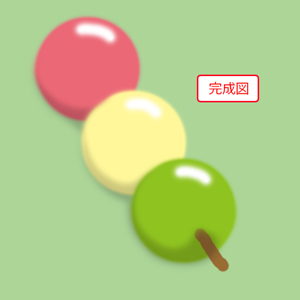
ブラシを準備する
新規ファイルを作成し、ファイル名に「描画の練習」と入力します。
[プリセット]より、「Photoshop初期設定」を選択し、[単位]を「pixel(ピクセル)」に設定し、
[OK]をクリックします。
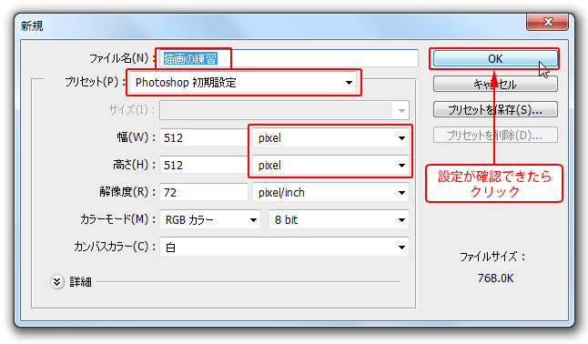
新規のウィンドウが表示されたら、[ツールパネル]から[ブラシツール]を選択します。
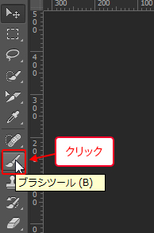
[コントロールパネル]では、さまざまな設定ができますが、
まずは、ブラシの「太さ」と「硬さ」を変更するため、
[ブラシプリセットピッカー]を開きます。
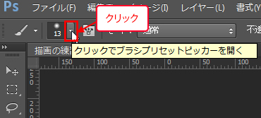
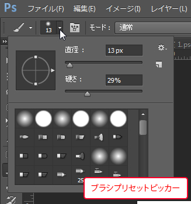
「直径」は、ブラシの太さを調節します。
「硬さ」は、ブラシのぼかし具合を調整します。
数値が低いほど柔らかくぼかした塗りで、高いほどはっきりした塗りで描画します。
「ブラシの形状」では、さまざまな種類のブラシを選択できます。
ここでは、「直径」を《50px》、「硬さ」を《0％》に指定しておきましょう。
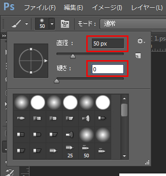
さらに[コントロールパネル]で「不透明度（インクの透明度）」を《100％》
「流量（インクの量）」を《100％》に設定します。
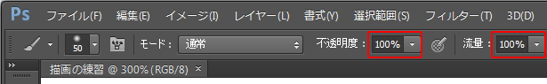
これでブラシの設定ができました。
ワンポイント
「不透明度」はブラシの色の透明度を設定します。
「流量」はブラシの1ストロークでブラシから出るインクの量を設定します。
両者の違いは分かりづらいのですが、不透明度を下げるとただ均質に透明になっていくだけで、
流量を下げると、かすれた感じのストロークで描くことができます。
このあたりの違いは、ブラシの形状が円形の場合はあまりはっきりと結果が出ませんが、
形状の異なるブラシを使用したり、筆圧を感知できるペンタブレットを使用することで、
その違いがはっきり出るようになります。
画面に色を塗っていきましょう
次にブラシの描画色を[スウォッチパネル]から設定します。
「パステルイエローグリーン」を選択しましょう。
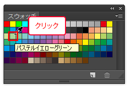
白いカンバスに色を塗っていきましょう。
カンバス上をドラッグすることで、色が塗られていきます。
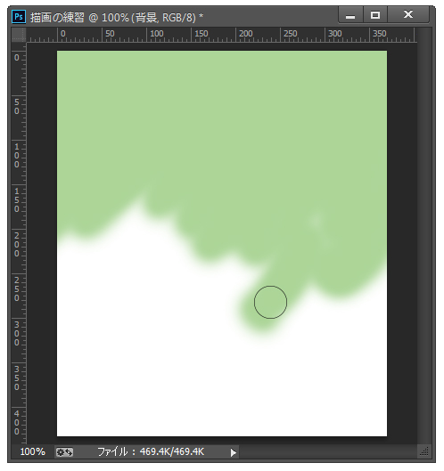
操作に慣れてきたら、ブラシの太さを変えてもかまいません。
広い領域を一気に塗りつぶすときは、直径を太くすると良いでしょう。
画面全体を塗りつぶせたら完了です。
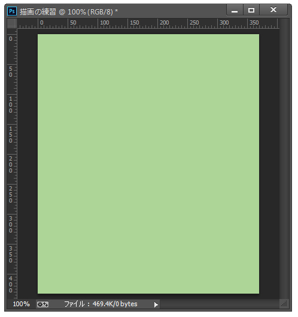
お団子と串を描いてみましょう
「直径」を《180px》、「硬さ」を《90％》にして、[スウォッチパネル]から「マゼンタレッド(明)」を選択し「ピンクのお団子」の形状を描画しましょう。
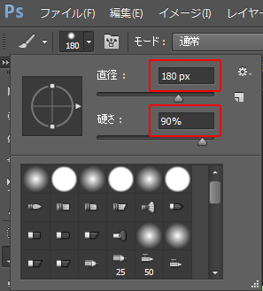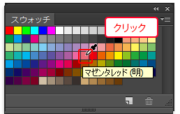
下図を参考に描画しましょう。
ブラシをハンコのようにポンとクリックするだけで描けると思います。
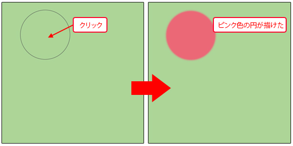
[スウォッチパネル]から「パステルイエロー」を選択し、「黄色のお団子」を描いてみましょう。
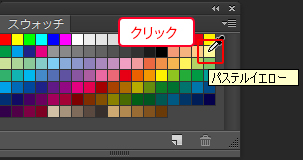
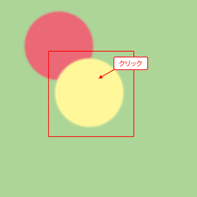
[スウォッチパネル]から「ピーグリーン(純色)」を選択し、「緑色のお団子」を描いてみましょう。
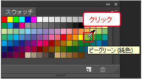
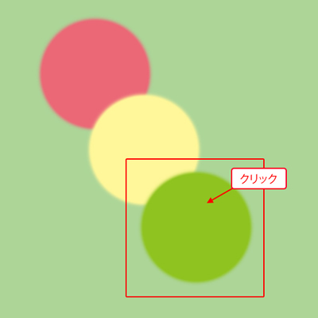
次に串部分を描いてみましょう。
ブラシの太さを《20px》、「硬さ」を《90％》にして[スウォッチパネル]から「暖色系のブラウン」を選択します。
 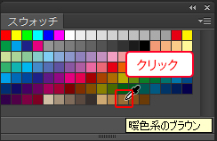
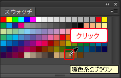
下の図のようにドラッグして描いてください。
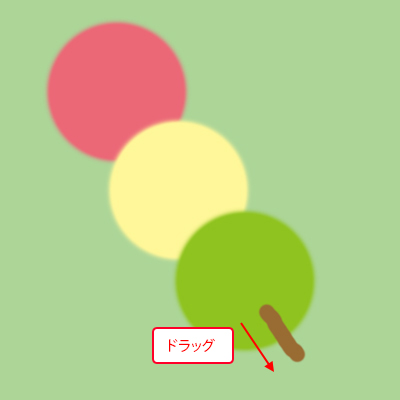
次にブラシの「不透明度」を変更し、影の部分を描いてみましょう。
ブラシの太さを《70px》にして、[スウォッチパネル]から「ブラック」を選択します。
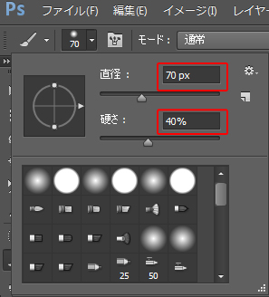 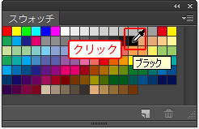
[コントロールパネル]の「不透明度」を《20％》に設定します。
これで半透明の黒インクを「100px」のブラシで塗る準備ができました。
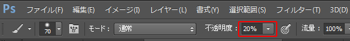
画面上のお団子の影を描きましょう。
なるべく外側にはみ出さない様に、赤い線のようにブラシを動かしてみましょう。
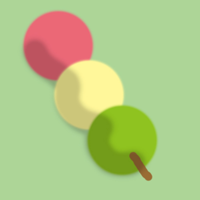 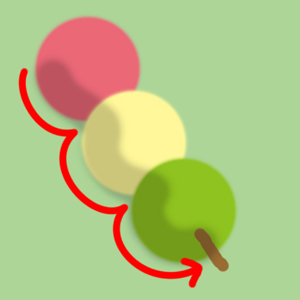
この項のまとめ
- [ブラシツール]の主な設定項目
- ・[ブラシツール]を選んだ状態で、[コントロールパネル]の[ブラシプリセットピッカー]から「直径」と「硬さ」、「ブラシの形状」が設定できる。
・「硬さ」の数値が低いほど、描画時のラインがぼやけ、数値が高いほど、はっきりとしたラインで描ける。
・[コントロールパネル]の「不透明度」の数値を下げることで、半透明の塗りで描画ができる。
・[コントロールパネル]の「流量」を下げることで、かすれたような表現ができる場合がある。
引き続きこのファイルを使用します。
ファイルは閉じずに次の項へ進んでください。